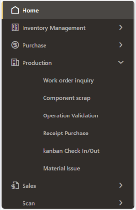
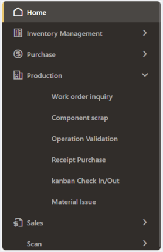
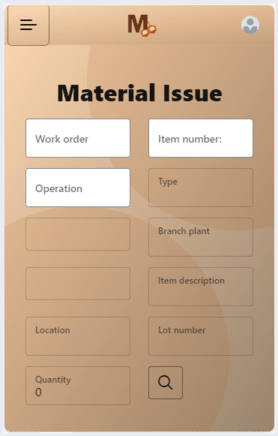
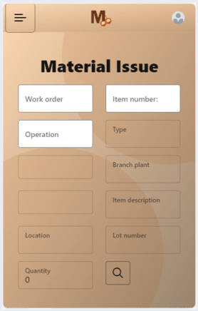

MobeeX
MobeeX est un projet de développement mis en œuvre par l'équipe d'ingénieurs d'Inetum Business Solution, dont je fais partie. MobeeX vise à intégrer une solution de " Bar Coding " pour réaliser une application mobile, connectée de manière fluide à l'ERP JD Edwards d'Oracle. Cette application offre une grande facilité d'utilisation, en exploitant les avantages des codes à barres 1D/2D (QR Code ou Data Matrix), et en proposant une liste de dialogues fonctionnels prêts à l'emploi, basés sur les programmes standards de JD Edwards.
Dans cette page
Description générale :
Le projet MobeeX représente une initiative majeure au sein d'Inetum Business Solutions, visant à développer une
application Web dédiée aux terminaux mobiles et sanners de codes-barres. L'objectif principal de MobeeX est de
faciliter les interactions entre les magasiniers opérant dans les entrepôts et le système ERP JD Edwards
d'Oracle. Cette application offre une solution de mobilité intégrée, exploitant les avantages des codes à
barres 1D/2D, pour une gestion d'entrepôt plus efficace.
MobeeX cible les PME ou les sites de petite et moyenne taille de grands groupes, pour lesquels une solution de
mobilité intégrée à l'ERP sera un avantage. intégrée à l'ERP sera un avantage.
Présentation Visuelle :
Caractéristiques Clés de MobeeX :
L'application MobeeX est spécifiquement conçue pour les terminaux mobiles tels que le ZEBRA, offrant une solution mobile optimisée pour la gestion d'entrepôt. Cette application vise à simplifier les opérations pour les utilisateurs en fournissant une interface intuitive et une intégration transparente avec le système ERP JD Edwards (JDE) d'Oracle.
Processus d'Authentification :
L'utilisateur accède à l'application en saisissant son identifiant et son mot de passe JDE. Une fois connecté, MobeeX récupère automatiquement la langue de préférence associée à son compte JDE. Cette fonctionnalité permet une personnalisation instantanée de l'affichage de l'application, offrant ainsi une expérience utilisateur plus fluide et adaptée à ses préférences linguistiques.


Menu Polyvalent :
LMobeeX propose un menu diversifié offrant une gamme étendue de fonctionnalités JDE directement accessibles depuis le terminal mobile de l'utilisateur. Les options disponibles dans le menu permettent à l'utilisateur de sélectionner et d'utiliser les fonctionnalités JDE spécifiques à ses besoins opérationnels.

 

L'équipe :
Équipe Fonctionnelle :
L'équipe fonctionnelle se compose de deux consultants, un senior et un junior, chargés d'analyser les besoins du client et le traduire en cahiers de charges fonctionnels et de piloter le projet du point de vue fonctionnel.
- Consultant Fonctionnel Senior :
Apporte son expertise dans l'analyse des besoins.
Rédaction des cahiers des charges fonctionnelles. - Consultant Fonctionnel Junior :
Participation à la rédaction des cahiers des charges et suivi quotidien de la réalisation du projet.
Équipe Technique (Développement) :
L'équipe technique, composée de huit développeurs, dont un chef de projet technique senior, est responsable de la mise en œuvre des cahiers de charges fonctionnels.
- Chef de Projet Technique Senior :
Direction technique du projet.
Garantie de la cohérence entre la vision fonctionnelle et l'implémentation technique. - Développeurs (sept au total) :
Mise en œuvre des cahiers de charges fonctionnels.
Répartition des Tâches :
- L'équipe fonctionnelle analyse les besoins du client, rédige les cahiers de charges, et pilote le projet du point de vue fonctionnel.
- L'équipe technique met en œuvre les cahiers de charges fonctionnels, assurant la cohérence technique.
Suivi du projet :
- Réunions quotidiennes par Teams pour un suivi régulier.
- Réunion hebdomadaire pour garantir le progrès et le bon déroulement du projet.
Outils Utilisés :
- IDE : Visual Studio Code
- Framework : OracleJET (JavaScript Extension Tools)
- Language informatique : TypeScript
- Gestion de Version : GitLab
- Communication : Teams et Outlook
Mes contributions :
Mon implication dans le projet MobeeX a été centrée sur le développement du dialogue 'Material Issue' et la traduction de l'application via des variables observables avec la bibliothèque Knockout.
Dialogue 'Material Issue' ('Sortie sur OF') :
Contexte & Objectifs :
Dans le contexte de la gestion de l'atelier de fabrication de l'entreprise, le dialogue 'Material Issue' a pour objectif de permettre à l'utilisateur de déclarer les quantités de matières ou de composants consommés dans le cadre d'un Ordre de Fabrication (OF). Cet outil s'inscrit dans une démarche visant à assurer une gestion précise et efficace des ressources matérielles lors du processus de fabrication.
Application JDE E1 :
L'application requise pour ce dialogue est la P31113, utilisant la version XMOB001. Cette application spécifique est dédiée à la gestion des ordres de fabrication et s'intègre parfaitement dans le processus opérationnel de l'entreprise.
Expression du Besoin :
Le dialogue 'Material Issue' se base sur le principe selon lequel les composants à utiliser sont associés à une opération de gamme.
L'utilisateur, généralement en possession d'un OF papier, dispose de la liste des composants avec des codes-barres pour leur
référence. Pour faciliter le processus, l'information est poussée à l'utilisateur, lui permettant de rechercher et de saisir les
données nécessaires de manière efficace.
L'utilisateur n'a besoin que du numéro d'OF, du numéro d'item et de l'opération pour effectuer sa recherche. Avec ces trois données,
il peut récupérer les informations restantes et ajuster la quantité en stock selon les besoins opérationnels.
Transmission et Récupération de Données depuis JDE :
Le dialogue 'Material Issue' utilise une orchestration par le biais d'un service request pour la transmission et la récupération de données depuis JD Edwards (JDE). Cette approche assure une intégration fluide entre le dialogue et le système JDE, garantissant une mise à jour en temps réel des informations relatives aux composants consommés.

Démonstration d'utilisation :
Dans le cadre de la gestion efficace des ordres de fabrication, illustrons l'utilisation du dialogue 'Material Issue' dans l'application MobeeX pour mettre à jour la quantité de sortie d'un item spécifique dans un ordre de fabrication donné. :
- Dans JDE, la quantité sorite de l'item N° 9031 dans l'OF N° 451119 est 100.
- L'utilisateur se connect sur l'application MobeeX et clique sur l'option 'Material Issue' dans le menu 'Production'
pour démarrer le processus de gestion des sorties de matériaux.
 

- L'utilisateur renseigne les champs requis tels que le numéro de l'ordre de fabrication, le numéro de l'item et l'opération associée.
Après avoir saisi les informations, l'utilisateur lance la recherche en cliquant sur l'icône de loupe.
Les informations nécessaires se remplissent automatiquement, offrant à l'utilisateur la possibilité de saisir la quantité de sortie.
- Une fois la quantité saisie, l'utilisateur confirme l'action en cliquant à nouveau sur l'icône de loupe, permettant ainsi la mise à jour
de la quantité dans JD Edwards (JDE).

- La quantité a été mise à jour dans JDE.

- En cas d'erreur de saisie ou de recherche non autorisée, un message d'erreur approprié est affiché pour informer l'utilisateur.


Compétences acquis :
- Capacité à rendre compte d’un travail réalisé au sein d’une équipe projet en mettant clairement en évidence sa contribution personnelle.
- Gérer le patrimoine informatique :
- Recenser et identifier les ressources numériques
- Exploiter des référentiels, normes et standards adoptés par le prestataire informatique
- Mettre en place et vérifier les niveaux d’habilitation associés à un service
- Vérifier les conditions de la continuité d’un service informatique
- Gérer des sauvegardes
- Vérifier le respect des règles d’utilisation des ressources numériques
- Répondre aux incidents et aux demandes d’assistance et d’évolution :
- Traiter des demandes concernant les services réseau et système, applicatifs
- Traiter des demandes concernant les applications
- Travailler en mode projet :
- Analyser les objectifs et les modalités d’organisation d’un projet
- Planifier les activités
- Évaluer les indicateurs de suivi d’un projet et analyser les écarts
- Mettre à disposition des utilisateurs un service informatique :
- Réaliser les tests d’intégration et d’acceptation d’un service
- Déployer un service
- Accompagner les utilisateurs dans la mise en place d’un service
Compétences acquis :
- Capacité à rendre compte d’un travail réalisé au sein d’une équipe projet en mettant clairement en évidence sa contribution personnelle.
- Gérer le patrimoine informatique :
- Recenser et identifier les ressources numériques
- Exploiter des référentiels, normes et standards adoptés par le prestataire informatique
- Mettre en place et vérifier les niveaux d’habilitation associés à un service
- Vérifier les conditions de la continuité d’un service informatique
- Gérer des sauvegardes
- Vérifier le respect des règles d’utilisation des ressources numériques
- Répondre aux incidents et aux demandes d’assistance et d’évolution :
- Collecter, suivre et orienter des demandes
- Traiter des demandes concernant les services réseau et système, applicatifs
- Traiter des demandes concernant les applications
- Développer la présence en ligne de l’organisation :
- Participer à la valorisation de l’image de l’organisation sur les médias numériques en tenant compte du cadre juridique et des enjeux économiques
- Référencer les services en ligne de l’organisation et mesurer leur visibilité
- Participer à l’évolution d’un site Web exploitant les données de l’organisation
- Travailler en mode projet :
- Analyser les objectifs et les modalités d’organisation d’un projet
- Planifier les activités
- Évaluer les indicateurs de suivi d’un projet et analyser les écarts
- Mettre à disposition des utilisateurs un service informatique :
- Réaliser les tests d’intégration et d’acceptation d’un service
- Déployer un service
- Accompagner les utilisateurs dans la mise en place d’un service
- Organiser son développement professionnel :
- Mettre en place son environnement d’apprentissage personnel
- Mettre en œuvre des outils et stratégies de veille informationnelle
- Gérer son identité professionnelle
- Développer son projet professionnel